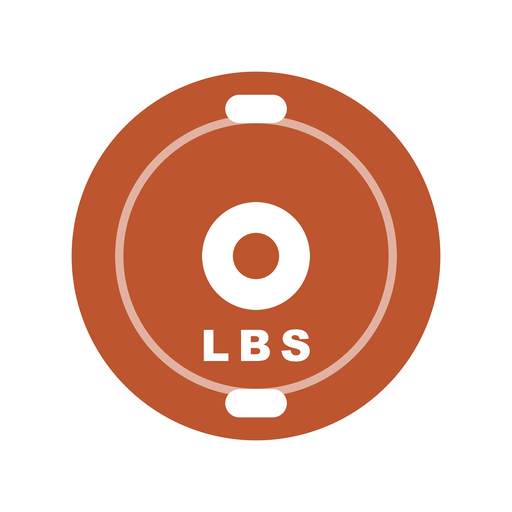
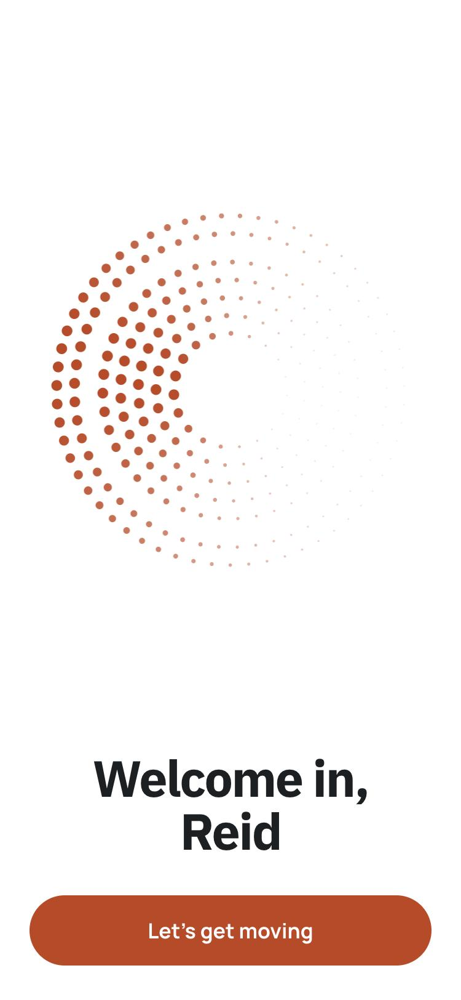
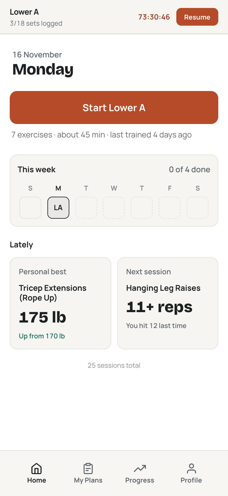
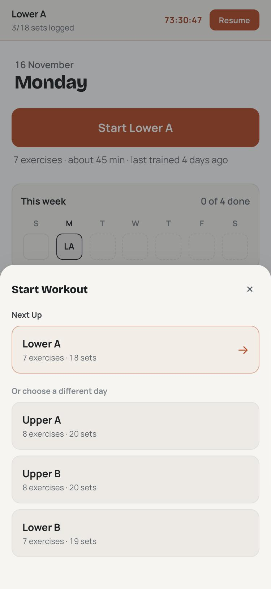
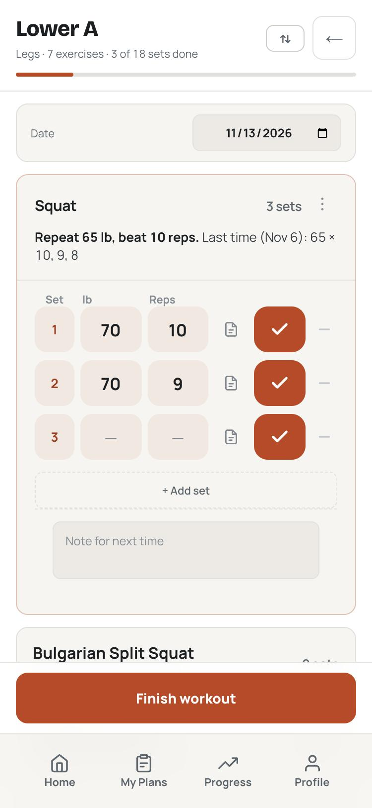
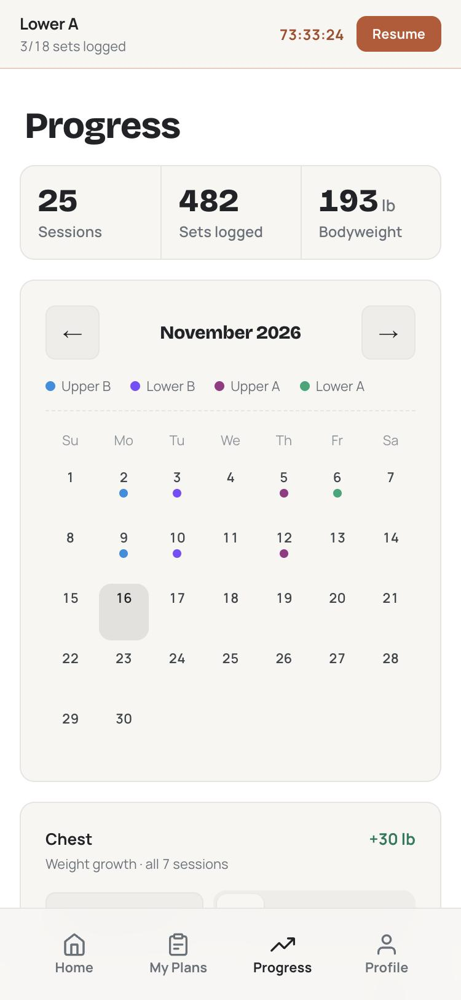
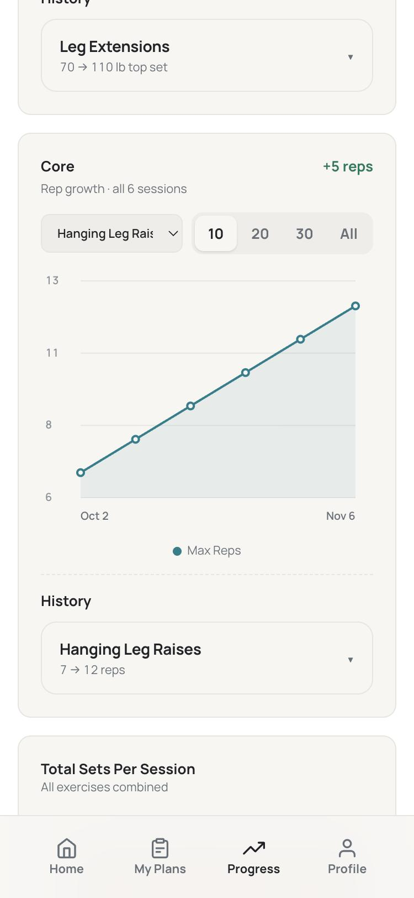
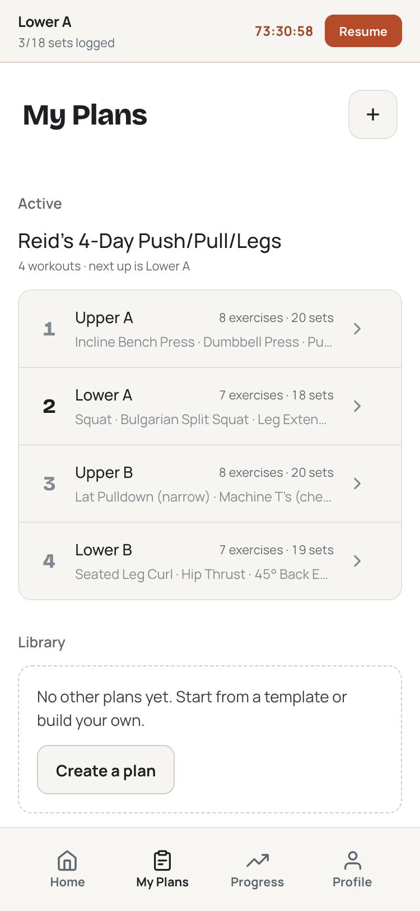

The real app in the new palette, captured at iPhone size. White page, warm off-white cards, and burnt orange only where it matters: the main button, your progress during a workout, and the logo.
Page#FFFFFF
Cards#F7F6F3
Borders#E7E5E1
Text · selected#202326
Secondary text#687078
Burnt orange#BD552F
Orange text on cards#A84A27
Delete / errors#CC3339
Push days · Chest#9C3587 (was orange)
Core chart#0B7F8C (was amber)

App iconsame orange

WelcomeLogo dots and the "Let's get moving" button. Was red and green.

HomeStart button and the in-progress banner. Today's marker and the active tab are dark ink.

Start workout sheet"Next up" is tinted orange; the other days stay neutral.

WorkoutProgress bar, ticked sets, set numbers and Finish. Was green ticks and a blue bar.

ProgressNo orange here except the banner. Upper A (push) dots are now plum, so they no longer look like the brand orange.

ChartsCore is now teal (was amber) and Chest plum. The sets-per-session line stays orange as overall progress; bodyweight is ink.

My PlansAll neutral; the next workout is marked in bold ink.
Worth a look
Push is now plum and the Core chart teal, so orange only ever means "main action", "workout progress" or the logo.
Delete, Discard, Remove and form errors are red everywhere — several of them used to borrow the push colour.
The banner at the top of most screens is there because this browser has an unfinished workout saved.